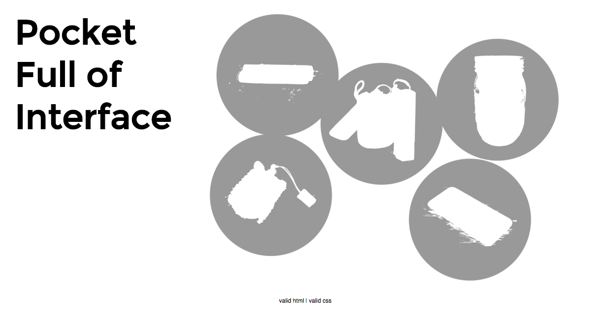

157 Blog
Blog 6 | February 24, 2016
CH8 PRESENTATION | MENTAL MODELS AND CONCEPTUAL DESIGN
This chapter will be focusing on the processes of bringing a design to life through mental models and conceptual design. The chapter starts of with mental models stating how mental models are “an explanation of someone’s thought process about how something works in the real world.” With mental models, there are two main models: the designer’s mental model and the user’s mental model. A designer’s mental model is essentially a vision of how the system works whereas a user’s mental model is a description of how the system works. Then there’s conceptual design that brings both of these two models together, connecting the two. Conceptual design is important in any design process. This is the part where it is possible to bring the designer’s mental model to life. While conceptualizing the design, it is important to keep it simple to mainly highlight the use of the design. And in hindsight, conceptual design is the only way the designer and user can communicate.
The next step in the design process is creating storyboards. Storyboards are “a sequence of visual “frames” illustrating the interplay between a user and an envisioned system. Storyboards bring the design to life in graphical “clips,” freeze-frame sketches of stories of how people will work with the system.” Simply put, storyboards are a series of frame-by-frame sketches that show how people will interact and work with the system. It is often in the style of comic book illustrations and should include the actors, screens, interactions, dialogue, and flow of the scenario.
With all the mental models and conceptual design, we also see that design can influence user behavior. Although a lot of the times, we design to cater to our user, we can actually use design to control user behavior. This approach is called slanty design, which means that it extends user-centered design by focusing on things people should/shouldn’t be able to do with the product. And while often times we are always sketch ideas or designing in front of a computer, it is actually best to physical interact with our designs. This is called design for embodied interaction. To physically interact with technology in a natural way, such as gestures, or involving the physical body, such as visually, sensory, hand-eye-mind collaboration is actually more effective than just sitting and thinking.
An example that I immediately related to after reading this chapter is Uber’s app. The app plays such a huge impact on the company because it is the core of what the company does and stands for. The app has gone thru a long sequence of testing and conceptual designs to make sure their users have the best user experience possible. They also factor in safety because their drivers use this app as well. Ultimately, they maintained a simple yet effective app that touches base with their users.
Blog 5 | February 11, 2016
For this exercise, I chose to work with jQuery UI, specifically the Selectmenu. I wanted to work with the Selectmenu because I wanted to incorporate drop down menu options for my final site so I thought it would be useful for me to familiarze myself with this library and maybe even learn to customize and stylize it. I orignally wanted to work with maps or mapping but it was just so complicated I couldn't really dissect it, so I ultimately had to resort to another library and having the "Selectmenu" was a good plan B for me. While I was learning and working on this library, it was actually fairly self-explanatory. I had to determine how, why and which categories chosen would lead to the next page.
This library is fairly simple and self-explanatory. Essentially it's creating overarching categories and then within those categories you can create subcategories that go into more detail. And with those specific subcategories chosen combined, it can lead the user to a new page with specific results tailored to the options he/she chose. It's very effective in terms of specificity and can also be thought of in terms of a filter. An example would be when you're online shopping for shoes and you check off filters, such as shoe size, color, style, etc., to find a pair of shoes that are more tailored towards you! So with this Selectmenu, it's extremely useful for situations that need such specificity.
Check out this library here: Selectmenu !
Blog 4 | February 4, 2016
With exercise 4 I wanted to keep a simple design that could be self-explanatory when users came to page. I started out with inverted and greyed out images to start the users off guessing what the images were. Then the next step for them would be to click on the images to reveal what it was. And as they click it, hovering over the images, there would be a line of text that explained what or how this item was significant in my daily life. I connected these visual elements in the user interface with the interaction and experience design where I started the site off to keep the user and audience guessing what the rounded images may be. And once they click on it to reveal it, there is also a small intro text that explains how the item is significant to my life. Three aspects of my solution that supported effects and interesting interface design is that I kept the website simple and straightforward without too much on that first page that could potentially confused the user.
Blog 3 | January 28, 2016
This is my final design after many tries and iterations for this exercise. Yay! I found my design to be an egaging visual and interactive solution to the exercise because of how simple the look and interface is. Visually, I kept it with a very white and minimalistic look to emphasize on the big four circles on the page. Those four circles highlight the four categories that my time-captures were sorted into. And based off of that, the time details would fall under each circle. When you first enter the webpage, you will only see those four circles and to show the detailed times, all you have to do is click on each circle to show or hide the details of the times. As you click to show and hide each category of time, the timeline of times will also show or hide according to which category is clicked. In terms of interactivity, I kept the interaction simple with clicks to each category to show or hide the details. I did want to incorporate a 'show all' or 'hide all' button, but I wasn't sure where to incorporate them where it would visually fit in and I also didn't have time to explore that part unfortunately. My favorite part of this page is the timeline on the bottom of the page. Instead of just limiting my exercise to be just categories and details, I really wanted to highlight how offtrack I would become when working on specific things. Color coding of the timeline shows exactly that! And as for color choice, I choose a range of blues simply because blue is my favorite color (haha)!

Blog 2 | January 19, 2016
THIS WEBSITE is my holy grail every quarter when it comes time to register for classes. Ninja courses. Back in the day, way back when, when there was no such thing as schedule builder yet, students had to manually plan and draw out their class schedules every quarter to make sure no classes over lapped in times. I remember spending hours and hours planning out my schedule for my first quarter at UC Davis. Thankfully, I met an upperclassmen friend that introduced me to this handy dandy site called ninja course. This site is great: you can pick and choose the classes you're interested in taking by adding it in the 'Add a course' section. As you're typing in the boxes, it'll even list out suggestions of departments and classes to make it easier for you. Then they will even show you the details of each course and give you a list of sections to choose from. While generating your schedule, Ninja Courses will specifcy any classes that may conflict with each other and that's when you can find Plan B to reorganize your schedule again. I don't know how I would have lasted 4 years of college without this site. Even though UC Davis came out with the convinient tool of schedule builder, I still stay loyal to Ninja Courses.

Blog 1 | January 7, 2016
Soundcloud is a site that I use quite often to listen to music. In fact, I actually use on a daily to listen to music. This site not only has great music but the interface design of this site is great as well. The biggest thing about this website that I appreciate the most is the fact that I can get to music right away. As soon as you go to the site, the home page is a list of suggestions of music, whether you have an account or not. The interface design of this site is really simple yet intuitive. The first homepage lets you discover new music based off of who you follow. And a small detail about this site that I really love and appreciate is the part where each song plays and instead of it being just a bar, it's a representation of the music's beat and flow (not sure if I made sense here). Overall, this website has an overall theme and design and it all ties in together extremely well.